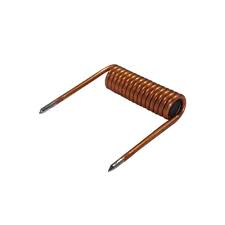

Indutores
-
Os indutores são componentes eletrónicos passivos que armazenam energia na forma de um campo magnético quando uma corrente elétrica passa por eles.
- Indutores de Núcleo de Ar
- Indutor de Núcleo de Ar (Air Core Inductor): Não possui um núcleo magnético, o que elimina a saturação do núcleo e a histerese. Utilizado em aplicações de alta frequência.
- Indutores de Núcleo de Ferro
- Indutor de Núcleo de Ferro Laminado (Laminated Iron Core Inductor): Utiliza lâminas de ferro para reduzir perdas por correntes parasitas, comum em transformadores de potência e reatores.
- Indutor de Núcleo de Ferro Sólido (Solid Iron Core Inductor): Utiliza um núcleo de ferro sólido, usado em aplicações de baixa frequência e alta corrente.
- Indutores de Núcleo de Ferrite
- Indutor de Núcleo de Ferrite (Ferrite Core Inductor): Utiliza um núcleo de ferrite para altas frequências, reduzindo perdas de corrente parasita e histerese. Comum em fontes de alimentação comutadas e filtros.
- Indutores de Toroide
- Indutor Toroidal (Toroidal Inductor): Tem um núcleo em forma de anel, oferecendo alta eficiência e baixa interferência eletromagnética (EMI). Usado em filtros de sinal e fontes de alimentação.
- Indutores de Potência
- Indutor de Potência (Power Inductor): Projetado para manusear altas correntes, usado em fontes de alimentação e conversores DC-DC.
- Indutores Variáveis
- Indutor Variável (Variable Inductor): Permite ajuste da indutância, usado em circuitos de sintonia e ajuste fino.
- Indutores de RF
- Indutor de Rádio Frequência (RF Inductor): Projetado para operar em altas frequências, utilizado em circuitos de rádio e comunicação.
- Indutores de Alta Frequência
- Indutor de Alta Frequência (High-Frequency Inductor): Utilizado em aplicações que requerem operação em frequências muito altas, como circuitos de micro-ondas.
- Indutores de Acoplamento
- Indutor de Acoplamento (Coupled Inductor): Dois ou mais indutores acoplados magneticamente, utilizados em conversores de potência e aplicações de transformadores.
- Chokes
- Choke de Linha (Line Choke): Utilizado para suprimir ruídos em linhas de alimentação.
- Choke de Modo Comum (Common Mode Choke): Utilizado para suprimir interferências de modo comum em circuitos de alimentação e sinais.
- Indutores de Áudio
- Indutor de Áudio (Audio Inductor): Projetado para operar em frequências de áudio, utilizado em filtros de crossover de altifalantes.
- Indutores SMD (Surface Mount Device)
- Indutor SMD: Projetado para montagem em superfície, usado em placas de circuito impresso (PCBs) modernas para economizar espaço e permitir montagem automatizada.
- Indutores de Potência Integrados
- Indutor Integrado (Integrated Power Inductor): Integrado em módulos de gestão de energia, utilizado em dispositivos portáteis e compactos.